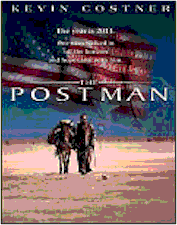
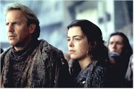
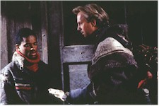

Contents | Features | Reviews | Books | Archives | Store |
 |
|
| Movie Credits | Buy It! |
The Postman
Review by Elias Savada
Posted 25 December 1997
|  | Directed by Kevin Costner Starring
Kevin Costner, Will Patton, Screenplay by Eric Roth and Brian Helgeland, |
The year is 2013.
There is no order.
There is no peace.
Return to sender. Audience unknown.
I’ve got a lot better things to do with my time that sit through three hours of this futuristic pseudo-epic babble dedicated to the same people who make a common habit of killing off their former supervisors. Some people therefore might want to classify this a black comedy. Many will laugh--albeit unintentionally.
Over-long and maddeningly narcissistic ("Dances with Mailmen"), this Christmas-day Warner Bros. release caps a year when the Looney Tune studio has unleashed such dreadful box office duds as Conspiracy Theory, Father’s Day, Free Willy 3, Mad City, The Man Who Knew Too Little, and Midnight in the Garden of Good and Evil. At least they had a critical success with L.A. Confidential and, to a lesser degree, with Contact. Their bottom line doesn’t look too good and The Postman, at $80 million, won't help keep the nails out of the coffin. The buzz on the film has studio execs clucking about like ostriches (or whatever ostriches do), quickly repositioning a dreadful initial promotion plan created by a now dismissed WB marketing exec. A screening of the trailer a month ago in a Washington theater was greeted with hoots and groans. Obviously, this didn’t build up any interest in this film above the other holiday movies glutting your neighborhood multiplexes.
So is it really a turkey? Well, it is fowl, or perhaps foul anti-fascist fodder, but I’ve seen a lot worse this year. 8 Heads in a Duffel Bag, for one. Costner’s view of the not-to-distant future is actually pleasant enough to look at, although director of photography Stephen Windon’s breath-taking vistas of the Pacific Northwest and the deserts of the Southwest are branded with an obvious Western influenced soundtrack by four-time Oscar nominee James Newton Howard, striking chords derivative of his earlier Costner connection Wyatt Earp. One of the film's problems is its attempt to straddle the fence between being a wide-screen John Ford wannabe and a post-apocalyptic Mad Max rip-off. Makes me want to head for my laserdisc player and watch Silverado (1985). Please letterbox version only! Yup, slide that shiny disc in and play one of the last great westerns of the 20th Century and Costner’s first brush of acting greatness.
Back to The Postman. Set 15 years in the future, after some undefined war has destroyed the fabric of our nation, leaving us without cars, telephones, and Monday Night Football, a "lone drifter" (Costner) wanders the countryside with his mule, his rhetorical conversations recalling strange visions of both Juan Valdez and A Boy and His Dog, a mid-1970s post-apocalyptic Don Johnson vehicle about a wanderer and his telepathic pooch. Hmmm, too bad Costner’s four-footed companion doesn’t talk. Regrettably, Costner's character does ... spots of Shakespeare that send townspeople agiggle. He spouts lines of The Bard in exchange for food and lodging, but his career plans are dashed when he is conscripted by the Holnists, a radical right wing faction lead by the despot General Bethlehem (Will Patton). For a color film, Costner's paints all his characters in single shades of black and white, particularly the "bad guys" (black leather, black horses). Oh for a touch of gray.
After Bill comes up in dinner conversation, the drifter makes his escape and takes shelter in a postal vehicle. Disrobing the skeleton of its uniform, he becomes THE POSTMAN, spinning a tale for the humble, hippy folks of Pineview, Oregon, that he has been sent as a representative of the Restored U. S. of A. to deliver old mail. Ah, he's delivering new hope, of course! Hailed as a savior, he beds Abby (Olivia Williams), who needs his good semen so that she and her husband can have a child. Yeah, it gets pretty strange here. Then, in a scene reminiscent of the Kent State massacre, the bedraggled residents of Benning, Oregon (the postman's latest mail drop) revolt, instilled with a new defiance against Bethlehem, who has taken Abby as an unwilling love slave. The Postman, his pride and body wounded, is nursed back to health by Abby (her husband being conveniently killed by Bethlehem) as the movie reaches its midpoint.
The second half follows the rag tag team of postmen that have been corralled and inspired by Ford Lincoln Mercury (Larenz Tate), an ambitious youngster previously "deputized" by The Postman. Learning of the mailmen's success in restoring delivery of junk mail to the area, The Postman realizes that the bad guys won't like this, not one bit. As expected, it's cat-and-mouse for the next hour as both leaders exhort their troops to the final conflict.

The year is 1997.
This is no movie to see.
I want my MTV.
Contents | Features | Reviews | Books | Archives | Store
Copyright © 1999 by Nitrate Productions, Inc. All Rights Reserved.